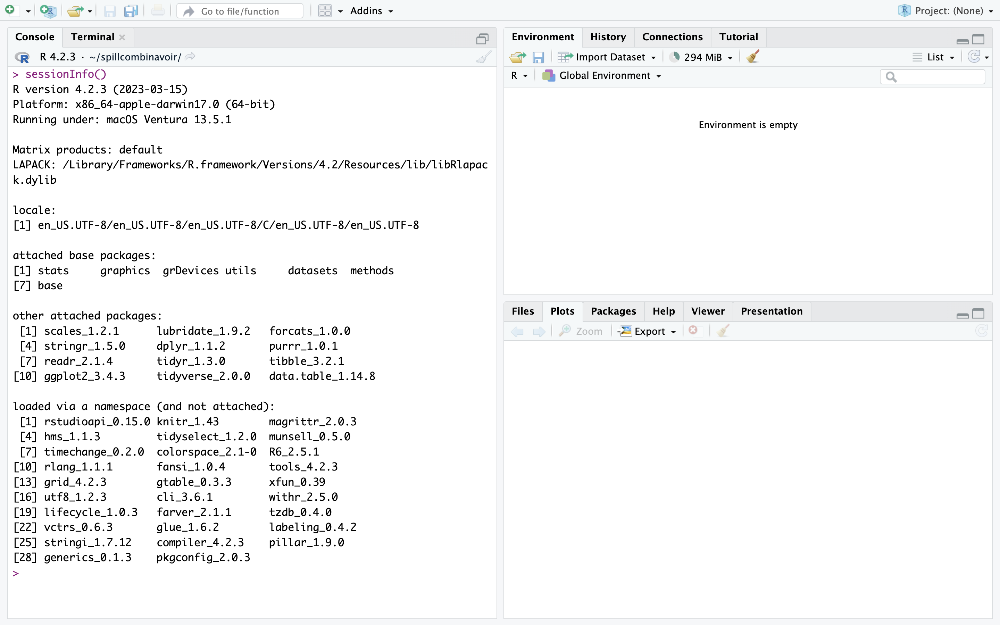
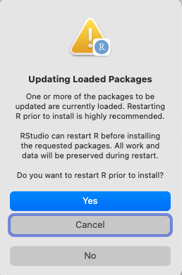

install.packages("tinytex")
tinytex::install_tinytex()Downloading R
Introduction
This course makes extensive use of R and RStudio. If you have any issues installing R or RStudio, let’s resolve them in advance so that you can make the most of our time together! As you follow these instructions, don’t worry if you don’t understand exactly what is going on - we will go through it all again during the first lecture! The goal here is to ensure that your computer is set up and ready for action. If you can’t complete these steps, please email Vicki and Mete as soon as possible.
Tech Requirements
First, make sure that your personal computer meets meets these requirements:
- 1024×768 screen resolution,
- 1.5GHz CPU,
- 2GB RAM,
- 10GB free disk space,
- a recent version of Windows, Mac OS, or Linux is installed.
Next, check that a robust internet browser such as Firefox, Safari or Google is installed. (Internet Explorer will not work.) Finally, make that a PDF viewer (e.g., Adobe Acrobat, Preview) is installed. It is fine if no PDF viewer is installed if you can view PDFs on your web browser.
Download R and RStudio
- Download R, a free software environment for statistical computing and graphics from CRAN, the Comprehensive R Archive Network. We recommend you install a precompiled binary distribution for your operating system – use the links up at the top of the CRAN page!
Note: MacBook users with an Apple Silicon chip (e.g., M1 or M2) should install the “arm64” version of R, while MacBook users with an Intel chip should install the regular (64-bit) version of R. You can check your laptop’s hardware specifications by clicking the Apple icon (top left corner) \> About This Mac.
- Install RStudio, a graphical user interface (GUI) for R. Click the link under “2: Install RStudio”. RStudio comes with a text editor, so there is no immediate need to install a separate stand-alone editor.
If R is already installed, ensure that the R version is 4.0 or higher. You can do this by opening RStudio, where you should see a multi-section window like below. Locate the quadrant named “Console”, and put your cursor at the start of the prompt indicated by the > symbol and where the red arrow is pointing. Type or copy sessionInfo() - make sure that only the I at the start of Info is capitalized and you are including the round brackets. Press enter to run this command and R should return an output to you. The first line shows what version of R is installed. Ensure that the R version installed is at least 4.0.

Download Packages
TinyTex
There is one package we have to install first before we can create PDF reports, which will be necessary for assignments and the project. Copy and paste into the console (where the \> symbol is) the two lines of code below to install a package called tinytex.
All packages
- Copy and paste the below code into your console.
install.packages(c("tidyverse", "here", "knitr", "datasauRus", "car",
"lme4", "lmerTest", "ggalt", "MuMIn", "sjmisc",
"lsmeans", "ggfortify", "vegan"), dependencies = TRUE)During installation, if you ever get the below message, click “No”.

If you get the message “Do you want to install from sources the packages which need compilation? (Yes/no/cancel)” in the Console, type “Yes” and press enter.
- Check that these packages have been installed correctly. To do this, go to the bottom right pane and click the tab for “Packages”. If you can search for and find the below packages, then they have been installed! They do not need to be checked off. Alternatively, go to the Console and type
library(lme4)to verify that thelme4package is installed. An error along the lines “there is no package called lme4” will be returned if the package is not installed.